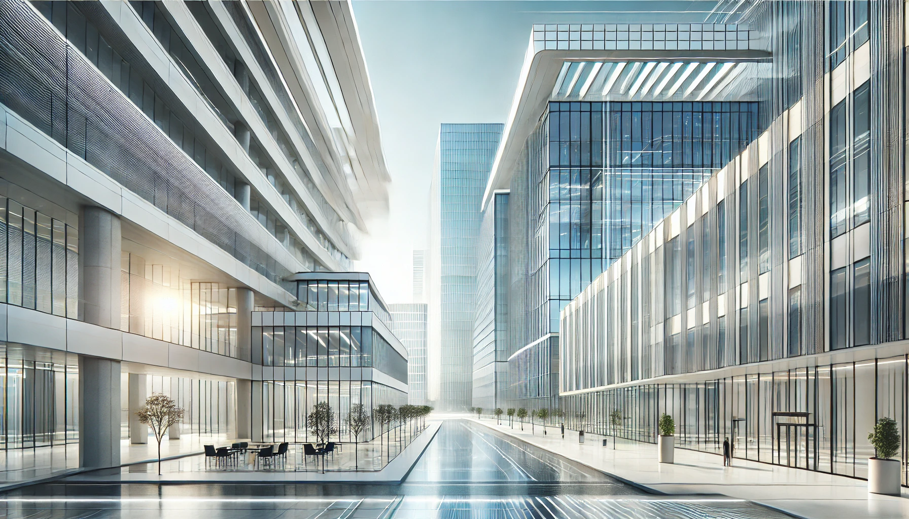

Innovative Commercial Construction Projects
Commercial construction projects are constantly evolving, incorporating innovative designs and technologies. Here are some of the latest trends in commercial construction:
- Green Building: Sustainable construction practices are becoming increasingly important, with a focus on energy efficiency and eco-friendly materials.
- Smart Buildings: Incorporating technology into construction projects to create smart buildings that are efficient, secure, and comfortable.
- Modular Construction: Using prefabricated modules to speed up construction time and reduce costs while maintaining high quality.
- Mixed-Use Developments: Combining residential, commercial, and recreational spaces in a single development to create vibrant, multi-functional communities.
- Adaptive Reuse: Repurposing old buildings for new uses, preserving historical architecture while meeting modern needs.